Nyzo version 564 (commit on GitHub) adds a transaction search command to the client.
In ByteUtil, some checks have been added to the arrayAsStringNoDashes() methods to avoid exceptions when the input array is null. The result of (null) is consistent with the result produced by the arrayAsStringWithDashes() method.
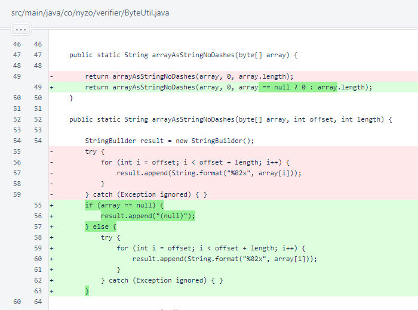In ClientTransactionUtil.senderDataForDisplay(), a check was added to avoid null-pointer exceptions.
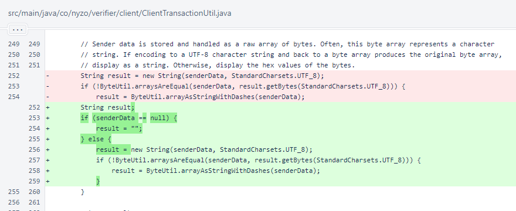In CommandEndpointWeb, running of the command is now wrapped in a try/catch block. If the command throws an exception or does not produce a result, an error result is produced to provide feedback to the user.
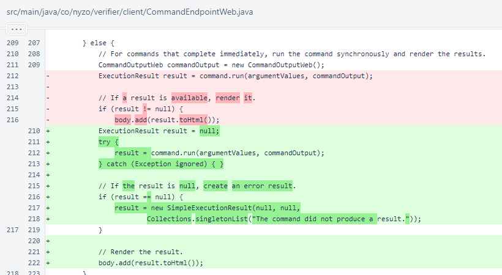In CommandManager, TransactionSearchCommand was added to the list of available commands.
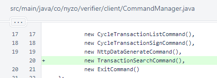In SimpleExecutionResult.toHtml(), the font size was changed to 0.8rem. This is the same font size used in tables in the documentation. A slightly smaller font size is helpful for fitting multiple columns within reasonable space requirements, especially on mobile devices.
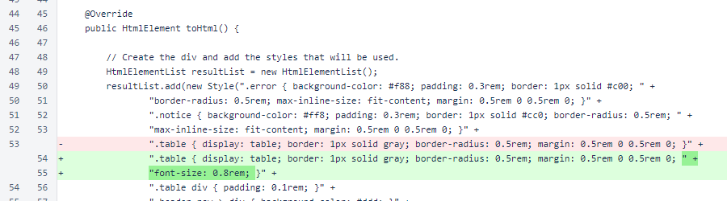Later in SimpleExecutionResult.toHtml(), a condition was added to bypass rendering of an empty result table.
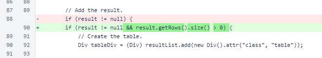The WebUtil.sanitizeString() method is now used to clean both header and data values in rendered HTML tables.
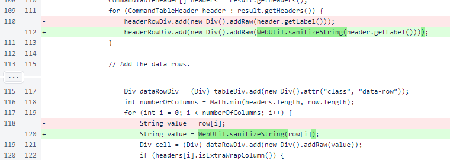The new escapeStringForJson() method is used to ensure the validity of string values in JSON responses.
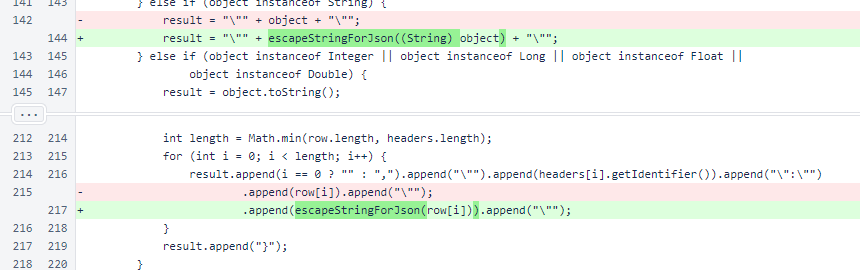The SimpleExecutionResult.escapeStringForJson() method escapes characters required by the JSON specification.
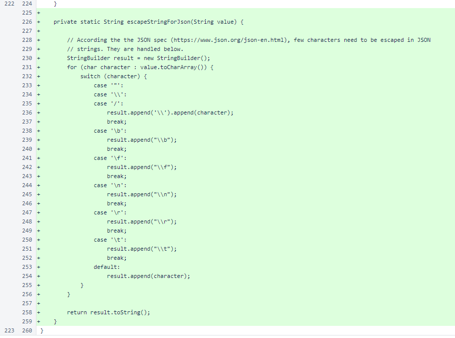The short command, long command, and description are implemented for TransactionSearchCommand as the Command interface requires. When implementing a new command, care should be taken to ensure that the short command and long command do not match the values used by any other commands.
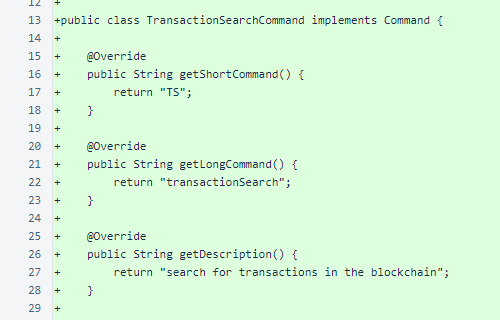The transaction-search command searches on either timestamp or block height.
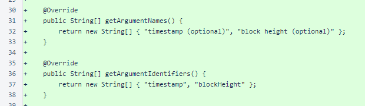The transaction-search command requires neither validation nor confirmation. It is not long-running — it produces immediate results based on blocks already loaded into memory. In the future, with appropriate indexing or database backing, this command could be extended to provide a more comprehensive transaction search.
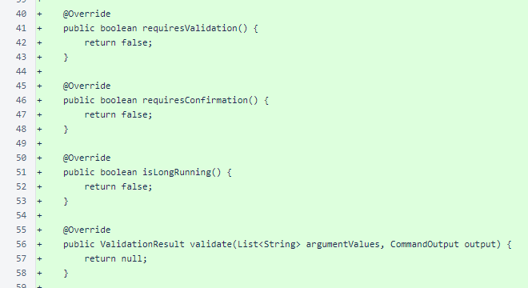The TransactionSearchCommand.run() method first processes the arguments. Either a timestamp or a block height may be provided, and the timestamp will be interpreted properly whether it is specified in milliseconds or seconds from the epoch. A minimum and maximum search timestamp are calculated from the provided arguments. Notices are added to the result so the user knows how the search was conducted.
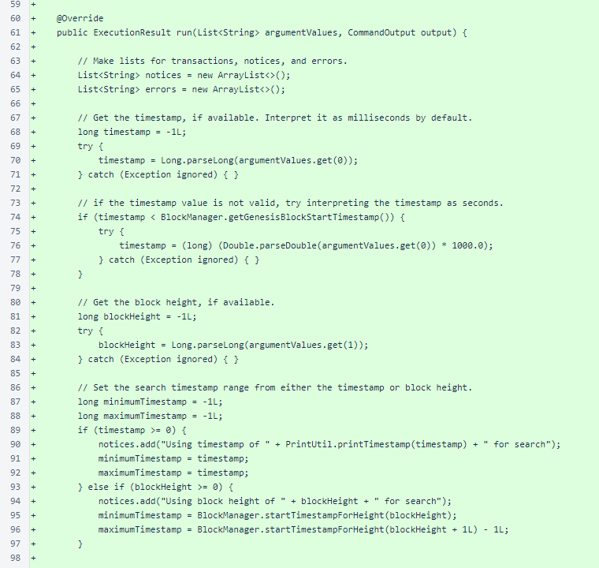The block is retrieved from BlockManager, and the result table is produced. Appropriate notices and errors are produced to provide context to the user.
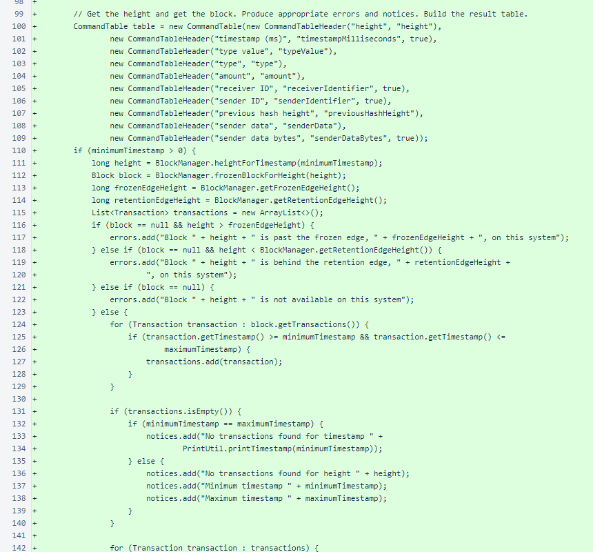A row is added for each transaction. An error is produced if the arguments were not able to be processed.
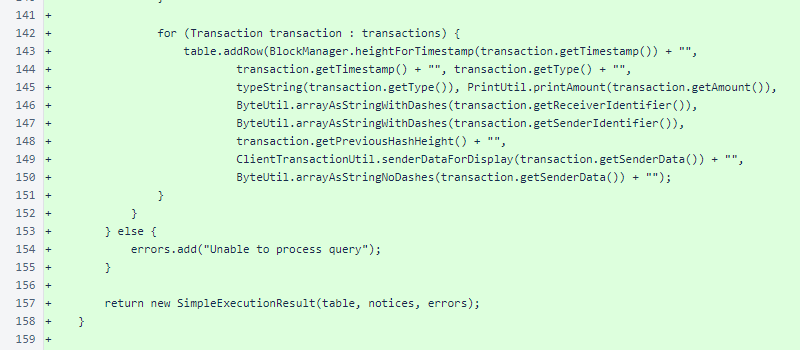The TransactionSearchCommand.typeString() method produces a human-readable type string for the table from the transaction's type value.
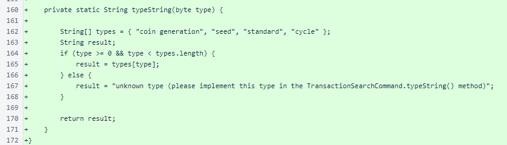